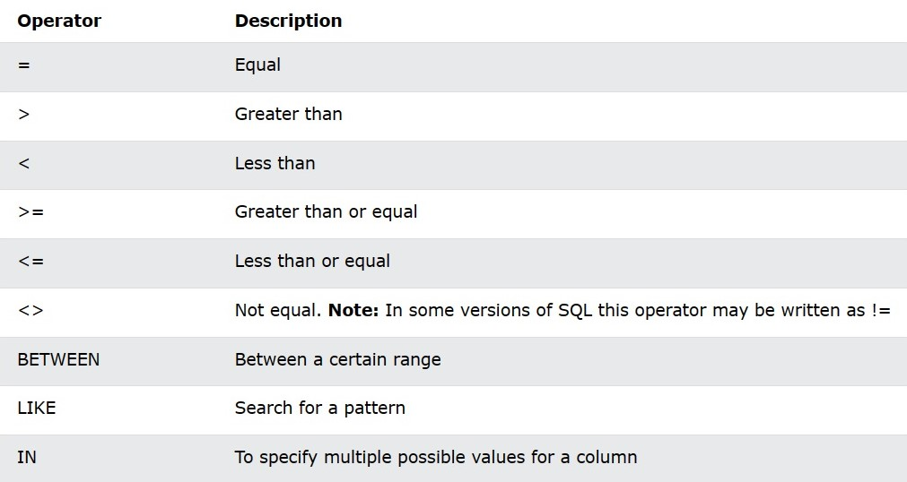
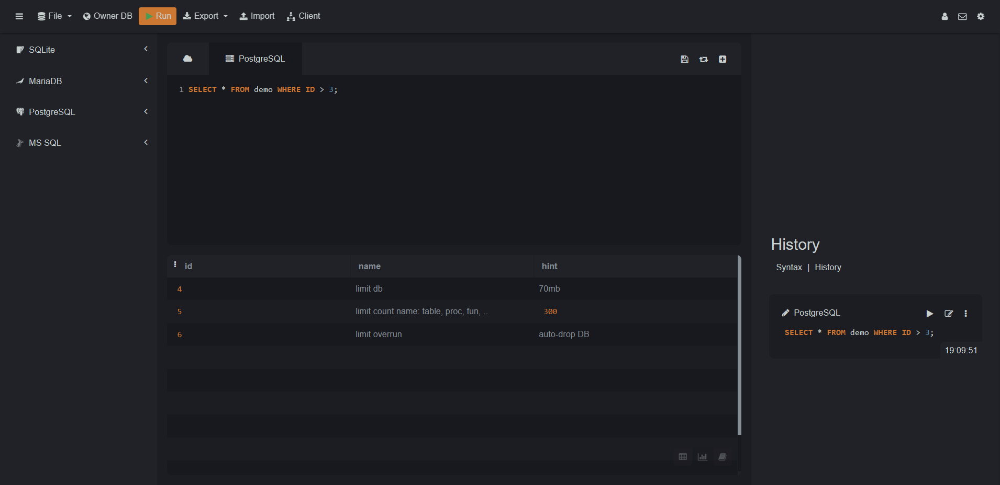

SELECT * FROM demo WHERE id > 3;

The AND operator is used to filter records based on more than one condition.
The WHERE clause can contain one or many AND operators.
The AND operator displays a record if all the conditions are TRUE.
SELECT * FROM demo WHERE id = 1 AND name = 'test';
The OR operator is used to filter records based on more than one condition.
The WHERE clause can contain one or many AND operators.
The OR operator displays a record if any of the conditions are TRUE.
SELECT * FROM demo WHERE id = 1 OR id = 3 OR id = 5;